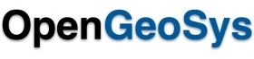

Research
Coupled processes, ground behaviour, infrastructure performance.
Computational geomechanics and geoenergy, with a focus on frozen soils and permafrost.
My research applies finite element and multiphysics modelling to nonlinear static and dynamic problems. The central question is how thermal, hydraulic and mechanical processes drive permafrost degradation, and how this affects ground stability and infrastructure performance in cold regions.
I use OpenGeoSys to build and calibrate THM models against field data, including a field-scale study of pore-water salinity effects on active-layer and permafrost dynamics at Norman Wells, Northwest Territories. A parallel line of work examines geothermal energy for low-carbon heating and cooling in cold-region and urban microclimates.
- 01
Permafrost and THM modelling
Coupled analysis of frozen ground, with field-data calibration at Norman Wells.
- 02
Geothermal energy
Subsurface characterisation and feasibility work for low-carbon heating and cooling in cold regions.
- 03
Seismic geotechnics
Non-linear site response of stone-column-improved soils, from my M.Eng. thesis.
Software
Tools I work with
- AB
ABAQUS
- AN
ANSYS
- PL
PLAXIS
- FL
FLAC
- CM
COMSOL Multiphysics
- DI
DIANA
- GS
- RS
Rocscience
- OGS

OpenGeoSys - MFMFront
- DS
DEEPSOIL
- ET
ETABS
- SAP
- ST
STAAD.Pro & RAM
- RF
RFEM & RSTAB
- MI
MIDAS Civil & Gen
- RB
Robot Structural Analysis
- PK
PROKON
- SK
SkyCiv
- TK
Tekla
- RV
- AC
AutoCAD
- C3
- AL
Aldoa
- Py
Python
- C++
C/C++
- Fo
Fortran
- ML
MATLAB
- SQL
SQL
- VBA
Excel VBA
- C#
C#
- GE
Google Earth
Skills
Practice and methods
Field practice
- Site supervision
- Site investigation
- Exploratory drilling and sampling
- Foundation monitoring
- 1D site response analysis
- Google Earth site review
- Field data collection
- Data analysis
- Quality control
- Health and safety awareness
- Technical reporting
Professional skills
- Project management
- Decision making
- Problem solving
- Risk assessment
- Contractor and design-team coordination
- Stakeholder communication
- Time management
- Teamwork
- Leadership
Methods
- THM coupling
- Constitutive modelling
- Fracture, damage and contact mechanics
- High-performance computing
- Stochastic simulation
- Verification and validation
Design
- Eurocode 1, 2 and 7 design
- Eurocode 8 seismic input
Communication
- Tutorial teaching
- Rubric-based grading
- Mentoring
- Conference papers
- Greek and English translation
- Student-organisation leadership
- Fundraising and outreach